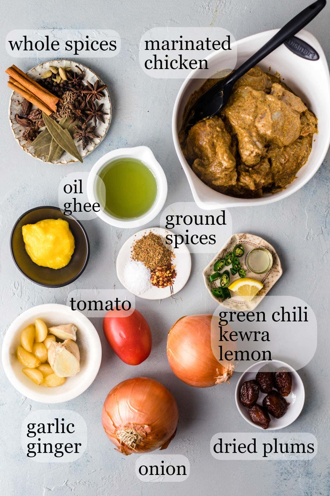
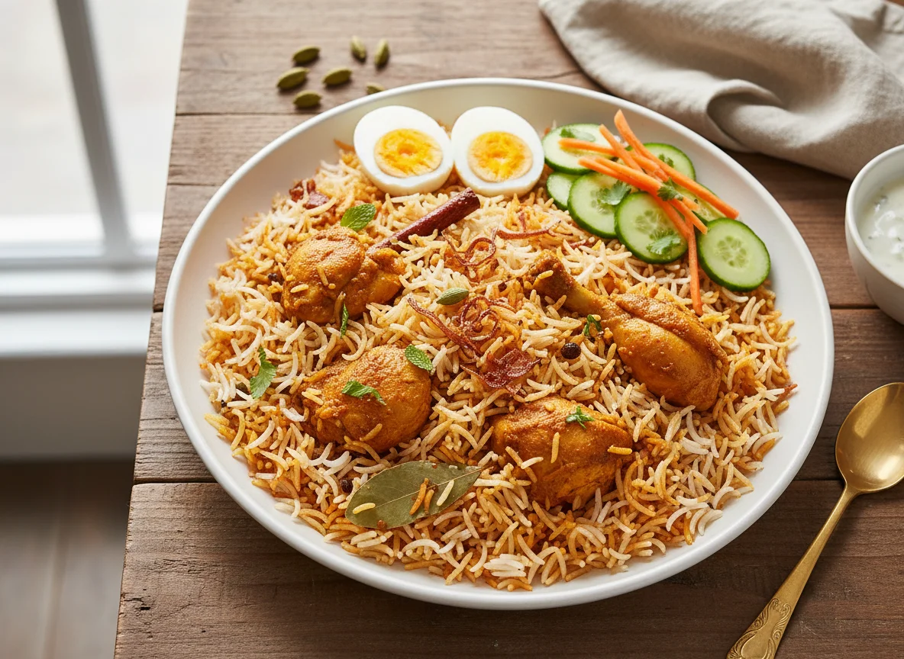

About Biryani!!!🍛
Biryani is a famous and beloved rice dish made with basmati rice 🍚, meat 🍗 and asian spices 🌶️
💡Fun Fact: If you ask almost anyone from India, Pakistan, or Bangladesh what their absolute favorite food is, biryani will almost always be their number one answer!
(mine too!)
Now lets talk about ingredients needed

- Basmati rice 🍚
- Meat🍗
- Tomatoes 🍅
- Onions 🧅
- Ginger & Garlic Paste 🧄
- Yogurt 🥛
- Cloves
- Black Cardamom 🟤
- Bay Leaves 🍃
- Oil or Ghee
Recipe
- Marinate the Chicken in yogurt, spices, and half of the ginger-garlic paste for 30 mins
- Boil the Rice in stainless steel pot of heavily salted water, also add black cardamom and bay leaves so the rice absorbs their aroma
- In the meantime, heat oil or ghee in other pot and fry the onions until they turn golden brown
- Add marinated chicken in onion pot and cook until chicken turns brown
- Add tomato slices and cover the pot so that chicken becomes tender
- Strain the rice when it is 80% cooked
- Lower the stove flame, then layer the boiled rice evenly on top of the chicken gravy (do not mix them together)
- Seal the pot tightly with lid for 15 minutes
- Turn off the flame and serve your tasty biryani with salad!!
